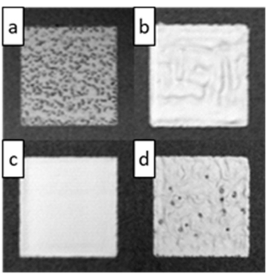

Automatised quality assessment in additive layer manufacturing using layer-by-layer surface measurements and deep learning
Publication Details
| Paper Title | Automatised quality assessment in additive layer manufacturing using layer-by-layer surface measurements and deep learning |
| Authors | Léopold Le Roux, Chao Liu, Ze Ji, Pierre Kerfriden, Daniel Gage, Felix Feyer, Carolin Körner, Samuel Bigot |
| Journal | Procedia CIRP |
| Publication Info | Volume 99, 2021, Pages 342-347 |
| DOI | 10.1016/j.procir.2021.03.050 |
Abstract
Additive manufacturing (AM) has gained high research interests in the past but comes with some drawbacks, such as the difficulty to do in-situ quality monitoring. In this paper, deep learning is used on electron-optical images taken during the Electron Beam Melting (EBM) process to classify the quality of AM layers to achieve automatized quality assessment. A comparative study of several mainstream Convolutional Neural Networks to classify the images has been conducted. The classification accuracy is up to 95%, which demonstrates the great potential to support in-process layer quality control of EBM. And the error analysis has shown that some human misclassification were correctly classified by the Convolutional Neural Networks.
Research Overview
In this paper, we present a new automatic quality classification method to detect pores and bulging defects occurring when using an Electron Beam Melting (EBM) AM printer to process Ti-6Al-4V powder. Simple 15 mm by 15 mm cubical parts were produced using various scanning speeds and beam powers, leading to 2 types of defects: porosity and bulging. Throughout the AM process, 16,324 electron-optical (ELO) images of the printed layers were collected and classified by a human expert into three categories: porous (43%), normal (38%), and bulging (19%).
We compared five of the most famous Deep Learning algorithms due to their popularity and good results, namely AlexNet, DenseNet, ResNet, SqueezeNet and VGG. Each CNN was trained twice, once with transfer learning (pre-trained) and once without it (untrained), to compare their capacity to learn from scratch on the data. Data pre-processing consisted of extracting the print part from the powder bed and removing the edge of the print to protect against border artefacts.

Figure 3: ELO images of layer types: (a) porous layer with black dots indicating pores, (b) bulging layer showing deformation, (c) normal quality layer, (d) layer with both porous and bulging features
The comparison test shows, as expected, that pre-trained CNNs have overall better accuracy and faster training than untrained CNNs. The top accuracy was obtained with a pre-trained SqueezeNet (95.1%). Calculations were performed using Python 3.7.4 and PyTorch 1.3.1 on GPU, enabling image classification in less than 0.01 seconds, making real-time quality monitoring feasible.
Figure 4: Images pre-processing pipeline showing extraction of the print part from the powder bed and removal of border artifacts
We then analysed the errors to understand the 5% inaccuracy that appeared to be the ceiling for all CNN models. To investigate this further, a confusion matrix of the pre-trained SqueezeNet CNN was constructed, highlighting how the CNN classifies images in comparison with human expert classification. The analysis revealed that the CNN was classifying 3% of images as bulging while they should be classified as normal according to the human expert, and 0.8% as normal while they should be classified as bulging.

Figures 7-8: Confusion matrix of pre-trained SqueezeNet and example images showing classification mismatches between CNN predictions and human expert labels
By examining the misclassified images more closely, we found that the confusion could be explained by slightly visible bulging that is tolerable and therefore categorized as normal by the human expert, but detected by the CNN's quantitative approach. Rather than wrong classification by the CNN, these classification mismatches are more likely to highlight human errors during the monotonous task of classifying such images. Therefore, the CNN performance is likely to be higher than the 95% plateau, suggesting that some human misclassifications were correctly identified by the Convolutional Neural Networks.
Conclusion
The results showed that ELO images can be correctly classified by a CNN without too much difficulty, allowing automatic monitoring of the printing state in real-time. This work proves that EBM printing quality of a single layer can be monitored in real-time using ELO images with great accuracy (95%), leading to the development of ML feedback loops for metal powder bed fusion additive manufacturing. The research demonstrates the great potential to support in-process layer quality control of EBM and establishes foundations for automated quality assessment systems in additive manufacturing.